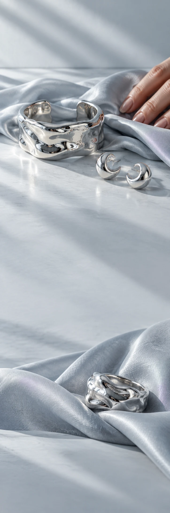

LUNE ATELIER
SieradenZilver-edit
LUNE ATELIER / THE SILVER EDIT
Een ander
soort glans.
Voor alles wat niet in goud hoeft.
Een gebogen vorm om je pols. Een klein lichtpunt bij je gezicht. Ontdek zilveren vormen die net zo goed bij een gewone dinsdag passen.
Ontdek de zilver-editEen detail.
Helemaal jij.
Voor alles wat niet in goud hoeft.
Ontdek de zilver-edit